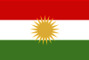

|
Länderinformationen Kurdistan
1. Das Wichtigste auf einen Blick2. Sehens- und Hörenswertes
3. Politik & Gesellschaft
4. Schmeckenswertes
5. Medien
6. Reisetipps
1. Wissenswertes
|  | Hier
haben wir die wichtigsten Zahlen und Fakten zu Kurdistan
und der kurdischen Sprache zusammengetragen. Das heutige
Siedlungsgebiet der Kurden liegt in den Ländern Türkei,
Syrien, Irak, Iran, Armenien und Aserbaidschan. |
 Die
kurdischen Sprachen
Die
kurdischen Sprachen
Die
kurdischen Sprachen lassen sich nicht eindeutig klassifizieren, da
sich die Sprachwissenschaftler nicht auf eine genau Klassifizierung
einigen konnten und sich das Sprachgebiet über mehrere Staaten
erstreckt und heute von den Sprachen des jeweiligen Landes stark
beeinflusst werden.
So
verwenden zum Beispiel die Kurden, die auf dem Gebiet der heutigen
Türkei leben, die türkische Schrift, also das lateinische
Alphabet mit einigen Sonderzeichen und die Kurden aus den Gebieten im
Irak die arabische Schrift.
Es
lassen sich auch keine genauen Zahlen über die Anzahl der
Muttersprachler machen, aber man geht von etwas mehr als 25 Millionen
Menschen aus, die einen der kurdischen Dialekte als ihre
Muttersprache beherrschen. Davon lebt der größte Teil auf
dem heutigen Gebiet der Türkei und verwendet, wie bereits
erwähnt, die lateinische Schrift. Die Sprache wird Kurmandschi
oder auch Nordkurdisch genannt und gehört zu den kurdischen
Dialekten mit den meisten Sprechern. Ungefähr 12 Millionen
Kurden sprechen Kurmandschi. Zwei weitere große Sprachgruppen
sind das Sorani (Zentralkurdisch) und das Gorani (Südkurdisch).
Diese beiden Dialekte werden jeweils von ungefähr vier Millionen
Menschen gesprochen.
 Das
Alphabet im Kurmandschi
Das
Alphabet im Kurmandschi
Im
Folgenden wollen wir Ihnen einen Überblick über das
Alphabet geben, das im Kurmandschi (Nordkurdisch) verwendet wird. Es
wird wie Türkisch mit der lateinischen Schrift geschrieben und
besitzt auch ähnliche Sonderzeichen wie das Türkische:
Buchstabe
|
Lautwert
|
Beschreibung |
a
|
[a]
|
wie dt. a in
"Rasen" |
b
|
[b]
|
wie dt. b |
c
|
[dʒ]
|
wie dsch in
"Dschungel" |
ç
|
[tʃ]
|
wie tsch |
d
|
[d]
|
wie dt. d |
e
|
[ɛ]
|
kurzes offenes e,
wie dt. "ä" in "hätte" |
ê
|
[e]
|
langes
geschlossenes e wie in "Sehne" |
f
|
[f]
|
wie dt. f |
g
|
[g]
|
wie dt. g |
h
|
[h]
|
wie dt. h |
i
|
[ə]
|
kurzer Schwa-Laut,
wie das e in dt. "Pause" |
î
|
[i]
|
wie dt. i in Liebe |
j
|
[ʒ]
|
wie das j in
"Journal" |
k
|
[k]
|
wie dt. k |
l
|
[l]
|
wie dt. l |
m
|
[m]
|
wie dt. m |
n
|
[n]
|
wie dt. n |
o
|
[ɔ]
|
wie dt. o in
"offen" |
p
|
[p]
|
wie dt. p |
q
|
[q]
|
weit hinten im
Rachen gebildetes k, im Dt. ohne Entsprechung |
r
|
[r]
|
gerolltes
Zungenspitzen-r |
s
|
[s]
|
immer stimmlos, wie
in "Ast" |
ş
|
[ʃ]
|
wie dt. sch |
t
|
[t]
|
wie dt. t |
u
|
[ʊ]
|
wie engl. u in
"kurd" |
û
|
[u]
|
langes deutliches
u, wie in dt. "Uhr" |
v
|
[v]
|
wie dt. w |
w
|
[w]
|
wie engl. w in
"week" |
x
|
[χ]
|
wie dt. ch in
"Bach" |
y
|
[j]
|
wie dt. j in
"Jacke" |
z
|
[z]
|
stimmhaftes s wie
in "Sonne" |
 Bevölkerung
Bevölkerung
Es
gibt weltweit ca. 25 bis 30 Millionen Kurden. Über 90% davon
leben noch im Kernland des ehemaligen Siedlungsgebietes der Kurden,
welches sich heute auf mehrere Länder verteilt. Die einzige
kurdische Kolonie, die zur Zeit halbwegs autonom agieren kann, sind
die irakischen Kurden im Norden des Irak. Weitere Siedlungsgebiete
liegen in der Türkei, in Syrien, im Iran und in Aserbaidschan.
Da natürlich kein Land Gebiete an ein eventuelles
selbstständiges kurdisches Staatsgebiet abtreten möchte,
werden Bestrebungen in dieser Hinsicht in allen Ländern
verhindert. Besonders hart griff hierbei die Türkei durch, in
der kurdische Medien wie z.B. Zeitungen oder Radiosender komplett
verboten wurden. Aber auch in anderen Ländern, wie
beispielsweise im Iran, kam es zu Auseinandersetzungen zwischen den
dort lebenden Kurden und der iranischen Führung. Diese ging mit
militärischer Gewalt gegen die Kurden vor.
Geschichte
Die
Kurden können auf eine über 2500-jährige Geschichte
zurückblicken. Die frühen Anfänge sind geschichtlich
nicht hinreichend geklärt. Erste sesshafte Siedlungen gibt es
bereits ca. 10.000 v. Chr. im Bereich des sogenannten fruchtbaren
Halbmondes - wie das Gebiet um Mesopotamien auch genannt wird. Nach
und nach werden Landwirtschaft und Technik in diesem Gebiet
weiterentwickelt. Erste Hochkulturen entstehen (z.B. das Reich der
Sumerer, der Assyrer, der Babylonier). Das erste Reich, welches mit
dem Volk der Kurden in Verbindung gebracht wird, ist das Reich der
Meder, welches um das Jahr 600 v. Chr. entsteht. 550 v. Chr. fällt
das Mederreich an die Perser. Xenophon, ein griechischer Kommandant
und Abenteurer, berichtet beim Durchmarsch seiner Armee durch
Nord-Kurdistan von seinen Erlebnissen. Er berichtet von den
„Karduchen“. Diese Berichte des Xenophon sind für
die heutige kurdische Geschichtsforschung eine wichtige Quelle
(„Anabasis“). Alexander der Große besiegt
schließlich das persische Reich und Kurdistan fällt unter
griechische Herrschaft. Nach seinem Tod, im Jahr 323 v.Chr., wird
sein Reich in mehrere Diadochenreiche aufgeteilt. Eines davon ist das
Diadochenreich Medien unter der Herrschaft von Atropates. Teile
dieses Königreiches mussten an die Seleukiden und dann später
an die Parther abgetreten werden. Die nächsten
Auseinandersetzungen bzw. Kriege brachten dann die Römer 50 v.
Chr. in das Land. Sie führten lange Krieg mit den Parthern (bis
in das Jahr 200 n. Chr.) um die Vorherrschaft im Nahen Osten. Um das
Jahr 220 n. Chr. werden die Parther schließlich von den
Sassaniden besiegt. In den nächsten 400 Jahren kämpfen die
Römer nahezu ununterbrochen gegen die Sassaniden um die
Vorherrschaft. Während der nun jahrhundertelangen ständigen
Kriege, die alle auf kurdischem Boden stattfanden, flohen die
ansässigen Kurden in die Berge, wo das kurdische Volk Schutz
fand. Die eigentlich zarathustrischen Kurden und Perser in diesem
Gebiet wurden nach der Niederlage des Byzantinischen Reiches gegen
die Araber zwangsislamisiert. Die arabisch-islamischen Eroberer
ermordeten in den folgenden Jahrhunderten zehntausende Kurden mit
unfassbarer Brutalität. Trotz dieser unglaublich brutalen
Vorgehensweise kam es immer wieder zu Aufständen durch die
Kurden. Ein Beispiel der grausamen Vorgehensweise der
arabisch-islamischen Eroberer ist ein Massaker an Hunderten von
Kurden, die auf einer Länge von 25 km entlang der Straße
von Meledi nach Mossul gekreuzigt wurden. Nach Ende der arabischen
Herrschaft fielen türkische und mongolische Stämme in das
kurdische Gebiet ein. Das Reich der Groß-Seldschuken wird im
11. Jhd. n. Chr. der mächtigste Staat in Vorderasien. In den
folgenden zwei Jahrhunderten wird die Gegend von Mongolen besetzt und
fast alle angrenzenden Staaten werden zu Satellitenstaaten der
Mongolen. Nach Abzug der Mongolen zu Beginn des 14. Jhd. eroberten
die Osmanen weite Teile Anatoliens und konnten ihre Vormachtstellung
in Vorderasien bis ins 20. Jahrhundert ausbauen. Neben den Osmanen
beherrschten die Safawiden den östlichen Teil Vorderasiens. Die
Perser lieferten sich heftige Auseinandersetzungen mit den Osmanen
bis schließlich eine Grenze zwischen beiden Reichen festgelegt
wurde, die quer durch ganz Kurdistan verläuft. Im 20.
Jahrhundert, als das Osmanische Reich auseinanderbricht, sahen die
Kurden eine Chance für die Unabhängigkeit und es kam immer
wieder zu Aufständen. Diese wurden von der aufstrebenden
Pantürkischen Bewegung brutal niedergeschlagen. Der türkische
Staat ermordete zwischen 1925 und 1940 mehr als 15% der kurdischen
Bevölkerung. Weitere 30% werden in den Westen des Landes
verbannt. Die Rechtfertigung für die Deportation von
Hunderttausenden Kurden stellte die Verbreitung der türkischen
Kultur dar. Während des Zweiten Weltkrieges herrschte in den
kurdischen Gebieten weitestgehend Ruhe. Die Kurden gründeten im
Jahre 1939 die Partei "Freiheitsliebendes Kurdistan", die
jedoch 1942 wieder aufgelöst wurde. Als Reaktion auf die
Auflösung wird die "Auferstehungspartei Kurdistans"
(JEKAF) gegründet und schließlich in die "Demokratische
Partei Kurdistans-Iran" (I-KDP) umbenannt. Nach dem Zweiten
Weltkrieg begannen erste Widerstände der Kurden gegen die
Besatzer in der Türkei und im Irak. Da sich die türkischen
und irakischen Kurden nicht gemeinsam gegen die Besatzung stellten,
blieben die Widerstände weitgehend ergebnislos. In den siebziger
Jahren erstarkte die kurdische Nationalbewegung erneut. Aus den
ersten Treffen einiger Studenten entstand die spätere
"Arbeiterpartei Kurdistans", PKK. Im Iran wurden vom Regime
des Ajatollah Khomeini nach dessen Machtübernahme (1979)
Hunderttausende Kurden ermordet. Khomeini ließ zahlreiche
Städte der Kurden durch das Militär bombardieren. Er
verdiente sich so in diesen Jahren den Beinamen "Metzger von
Kurdistan". In den achtziger Jahren ging schließlich
Saddam Hussein mit chemischen Waffen gegen Kurden im Irak vor.
Zehntausende Kurden flüchten hierauf in die kurdischen Gebiete
in der Türkei. In der Türkei wiederum wurde ab 1992 ein
blutiger Krieg in den kurdischen Gebieten begonnen. Der türkische
Staat zerstörte systematisch über 4000 Dörfer, es
wurden bis zu vier Millionen Menschen vertrieben, durch das
Niederbrennen von Wäldern, Äckern und Gärten die Natur
Kurdistans zerstört und Tausende von Oppositionelle ermordet.
Auch
in der jüngsten Vergangenheit erging es dem kurdischen Volk
nicht besser. Bis heute leben die Kurden über mehrere Länder
hinweg verstreut in Unterdrückung und besitzen keinen
unabhängigen Staat.
Vertrag
von Sèvres und Lausanne
Nach
dem Zusammenbruch und Zerfall des Osmanischen Reiches wurde den
Kurden im Vertrag von Sèvres 1920 das Recht auf
Selbstbestimmung zugestanden.
Siedlungsgebiet
Das
eigentliche traditionelle und historische Siedlungsgebiet der Kurden
wird Kurdistan genannt. Neben dem Hauptgebiet gibt es jedoch noch
einige andere größere Gebiete, die überwiegend von
Kurden bewohnt werden. Meist wurden die Kurden von den Regierungen
der Staaten, auf deren Territorium sich kurdisches Siedlungsgebiet
befindet, in andere Gebiete vertrieben.
 Zeitzonen
Zeitzonen
Die
kurdischen Siedlungsgebiete befinden sich in mehreren Zeitzonen. Wir
gehen von den Ländern Türkei, Iran, Syrien und Irak aus,
auf denen sich traditionell Kurdistan befindet.
In der Türkei und in Syrien gibt es ebenfalls wie in Deutschland eine Sommerzeit, weshalb der Zeitunterschied ganzjährig +1 Stunde beträgt.
Das bedeutet: Wenn es in Deutschland (oder Österreich oder der Schweiz) 12 Uhr mittags ist, ist es in der Türkei oder in Syrien bereits 13 Uhr. Im Irak gibt es auch eine Sommerzeit. Daher beträgt hier der Zeitunterschied ganzjährig +2 Stunden. Das bedeutet: Wenn es in Deutschland (oder Österreich oder der Schweiz) 12 Uhr mittags ist, ist es im Irak bereits 14 Uhr. Im Iran gibt es keine Sommerzeit, aber er stellt eine Besonderheit dar. Im Winter beträgt hier der Zeitunterschied +2,5 Stunden und im Sommer +3,5 Stunden. Das bedeutet: Wenn es in Deutschland (oder Österreich oder der Schweiz) 12 Uhr mittags ist, ist es im Iran bereits 14.30 Uhr bzw. 15.30 Uhr.Im nächsten Kapitel haben wir einige ausgesuchte Reiseempfehlungen zusammengestellt.